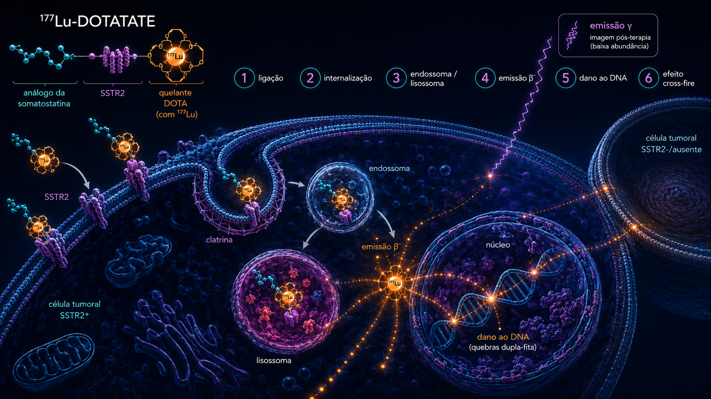

01 Cronologia
Da descoberta da somatostatina em 1972 ao primeiro radioligante terapêutico aprovado para NETs em 2018: 46 anos de evolução paralela em endocrinologia, química peptídica e medicina nuclear.
Descoberta da somatostatina
Brazeau, Guillemin e cols. isolam o peptídeo de 14 aminoácidos do hipotálamo ovino. Em 1982, Wilfried Bauer e a Sandoz sintetizam a octreotida (SMS 201-995, Sandostatina) — análogo estável de meia-vida muito maior.
OctreoScan · primeira imagem SSTR
Krenning (Erasmus, Roterdã) introduz o 111In-DTPA-D-Phe1-octreotida. Pela primeira vez é possível visualizar receptores de somatostatina em pacientes com NET. Aprovado FDA em 1994.
Primeira PRRT com 111In-octreotida
Krenning e Kwekkeboom usam altas atividades de 111In-octreotida com elétrons Auger. Respostas modestas mas prova de conceito sólida. Os elétrons Auger com curto alcance limitavam a eficácia.
Era 90Y-DOTATOC e desenvolvimento do 177Lu-DOTATATE
Erasmus, Basel e Heidelberg evoluem para 90Y-DOTATOC (β⁻ de alta energia, alcance maior — bom para tumores grandes mas com toxicidade renal). O 177Lu-DOTATATE entra como alternativa com perfil renal melhor e boa cobertura de tumores pequenos.
Protocolo Erasmus consolidado
Kwekkeboom publica série de >500 pacientes tratados em Roterdã com 7,4 GBq × 4 ciclos a cada 8 semanas, com infusão de aminoácidos. Resposta objetiva 30%, PFS mediana ~33 meses.
NETTER-1 (NEJM)
Strosberg e cols. publicam o estudo fase 3 randomizado em NETs midgut progressivos: PFS não atingida vs 8,5 m com octreotida 60 mg, ORR 18 vs 3%. Principal evidência regulatória.
Aprovação FDA da PRRT (177Lu-DOTATATE) · 26 jan 2018
Primeira aprovação ampla de radiofármaco terapêutico moderno. Indicado para GEP-NET SSTR-positivos em adultos. Aprovação EMA havia sido em set/2017.
NETTER-2 (Lancet) — primeira linha em G2/G3
Singh e cols.: GEP-NETs G2/G3 (Ki-67 10-55%), Lu-DOTATATE + octreotida 1L vs octreotida alta-dose. PFS 22,8 vs 8,5 m. Mudou paradigma de uso só em segunda linha.
Aprovação FDA pediátrica do Lutathera · abr 2024
FDA aprova o 177Lu-DOTATATE para pacientes ≥12 anos com GEP-NET SSTR+ — 1ª aprovação de radiofármaco pediátrico — com base no NETTER-P e na extrapolação do NETTER-1.
COMPETE, COMPOSE, OCLURANDOM
COMPETE valida vs everolimus em G1/G2 GEP-NET. COMPOSE testa em G2/G3 vs quimioterapia FOLFOX ou CAPTEM. OCLURANDOM vs sunitinib em pNET. Posicionamento competitivo com terapias-alvo.
02 Mecanismo molecular
O octreotato se liga ao receptor de somatostatina tipo 2 (SSTR2), abundantemente expresso em NETs bem-diferenciados. O complexo é internalizado e o 177Lu emite radiação β no compartimento intracelular.

Ligação ao SSTR2
O 177Lu-DOTATATE reconhece e se liga aos receptores de somatostatina, principalmente o SSTR2, frequentemente superexpresso na membrana das células tumorais neuroendócrinas.
Internalização
Após a ligação ao receptor, o complexo SSTR2–radioligante é internalizado por endocitose mediada por receptor, com formação de vesículas intracelulares.
Retenção endossomo-lisossomal
O complexo internalizado é direcionado para compartimentos endossomais e lisossomais, onde o radioligante permanece retido no interior da célula tumoral.
Emissão β⁻ terapêutica
O 177Lu emite partículas beta menos, capazes de depositar energia no interior da célula-alvo e no microambiente tumoral adjacente.
Dano ao DNA
A radiação induz dano direto e indireto ao DNA, incluindo quebras de dupla fita, estresse oxidativo e falha de reparo celular, levando à morte tumoral.
Efeito cross-fire
O alcance tecidual da radiação beta permite atingir células vizinhas, inclusive com baixa ou ausente expressão de SSTR2, ampliando o efeito terapêutico em tumores heterogêneos. A emissão gama do 177Lu permite imagem pós-terapia e avaliação da distribuição do radiofármaco.
A expressão de SSTR2 cai conforme aumenta o Ki-67 e a perda de diferenciação. Tumores G1 (Ki-67 <3%) tipicamente expressam SSTR2 em 80-90% dos casos, G2 (Ki-67 3-20%) em ~70%, G3 (Ki-67 >20% bem-diferenciado) em ~50%, e NEC mal-diferenciados em <30%. O 68Ga-DOTATATE PET/CT é o teste obrigatório de seleção.
03 Esquema terapêutico
Protocolo Erasmus / NETTER: 7,4 GBq por ciclo, intervalo de 8 semanas, 4 ciclos planejados. Cada infusão dura ~30 min mas requer ~5 horas no centro com infusão de aminoácidos.
Ciclos planejados
04 Nefroproteção · ácidos básicos
Ao contrário de Lu-PSMA, a infusão de aminoácidos básicos (lisina + arginina) é mandatória para PRRT. O DOTATATE é reabsorvido nos túbulos proximais por receptores carregados negativamente; lisina e arginina (carga positiva) competem por essa reabsorção e reduzem a dose renal em ~50%.
A reabsorção tubular do Lu-DOTATATE depende dos receptores megalin e cubilin, que reconhecem proteínas e peptídeos pequenos com carga positiva. Lisina e arginina, ambos carregados positivamente em pH fisiológico, saturam esses receptores e impedem a reabsorção do radiopeptídeo, que então é eliminado pela urina. Resultado: queda de ~50% na dose renal absorvida.
05 Imagem teranóstica
A elegibilidade para Lu-DOTATATE depende de captação tumoral em PET/CT com análogo da somatostatina marcado com 68Ga.
Antiga escala derivada do OctreoScan, ainda usada: 0 (sem captação), 1 (< fígado), 2 (= fígado), 3 (> fígado), 4 (> baço/rim). Para indicar Lu-DOTATATE recomenda-se score ≥ 2 em todas as lesões alvo (idealmente 3-4). Lesões score 0-1 sugerem doença SSTR-negativa que não se beneficiará da PRRT.
06 Ensaios pivotais
Trajetória da PRRT em NETs: NETTER-1 estabelece em segunda linha; NETTER-2 e COMPETE consolidam em primeira linha; ensaios em pNET ainda em curso.
NET midgut progressivo a octreotida 30 mg · n=229 · vs octreotida 60 mg
Aprovação FDA. PFS 4× maior. OS comprometida por crossover (~36% no braço controle).
GEP-NET G2/G3 (Ki-67 10-55%) · n=226 · 1L · Lu-DOTATATE + octreotida vs octreotida 60 mg
Mudou paradigma. Lu-DOTATATE em primeira linha para NETs G2/G3 SSTR-positivos.
GEP-NET G1/G2 progressivo · n=312 · vs everolimus
Superioridade direta sobre everolimus em pNET e siNET G1/G2. Posicionamento no algoritmo.
GEP-NET G2/G3 (Ki-67 15-55%) · n=202 · vs FOLFOX ou CAPTEM
Comparação direta com QT em alta-grade. Definidor para pacientes G3 borderline.
pNET G1/G2 progressivo · n=84 · vs sunitinib
Sinal consistente em pNET. Abre espaço para Lu antes ou em alternativa a sunitinib/everolimus.
GEP-NET bem-diferenciado FDG-ávido · n=162 · fase III · PRRT + CAPE-TEM vs PRRT isolada
Testa intensificar a PRRT com CAPE-TEM em GEP-NET FDG-ávido (biologia mais agressiva). Monocêntrico (Tata Memorial, Mumbai).
NET/PPGL pediátrico (12-17 anos) · n=11 · single-arm · dosimetria/segurança
Base da aprovação FDA pediátrica (≥12a, GEP-NET SSTR+, abr/2024); análise primária publicada (EJNMMI 2025).
>1500 pacientes tratados em Roterdã
Maior experiência mundial real-world. Confirmou eficácia e segurança ao longo de 16 anos.
07 Dosimetria
Tumor é o sítio mais irradiado. Rim é o órgão crítico — daí a importância da nefroproteção. Medula vermelha pode ser segundo limitante em pacientes com carga tumoral alta.
| Órgão / tecido | Dose por GBq (Gy/GBq) | Visualização | Limite cumulativo (referência) |
|---|---|---|---|
| Tumor (mediana) | 5 — 50 | — | |
| Baço | ~ 1,5 | variável | |
| Rins (com aminoácidos) | ~ 0,6 — 1,0 | 23 Gy (BED) · 27 Gy se sem fatores de risco | |
| Glândulas suprarrenais | ~ 0,2 | — | |
| Medula óssea (vermelha) | ~ 0,03 | 2 Gy | |
| Hipófise | ~ 0,16 | raramente clinicamente relevante | |
| Tireoide | ~ 0,05 | baixa expressão SSTR |
Estudos do grupo Erasmus e Uppsala mostram correlação forte entre dose tumoral acumulada (em geral >100 Gy) e resposta objetiva. Em centros teranósticos, dosimetria SPECT/CT seriada após cada ciclo permite estimar dose tumoral e ajustar necessidade de ciclos adicionais. Dose renal cumulativa <23 Gy (BED) é segura mesmo em pacientes >75 anos.
08 Eventos adversos · perfil NETTER
A maior parte da toxicidade é leve a moderada. Náusea/vômitos peri-infusão (aminoácidos) e citopenias prolongadas são os pontos de atenção principais.
Risco real porém raro (<1%) em pacientes com tumores funcionantes (síndrome carcinoide ativa). Octreotida EV deve estar disponível na sala de tratamento. Pacientes com sintomas carcinoides ativos podem receber octreotida curta nas 48 h precedentes — sem comprometer captação do Lu, segundo dados Erasmus.
09 Perspectivas: alfa, retratamento, novos alvos
A frente de pesquisa em PRRT-NET caminha por três avenidas: alfa-emissores para refratários, retratamento sistemático em respondedores e novos alvos (CXCR4, GLP-1, antagonistas SSTR).
177Lu-DOTATATE (β⁻)
- Energia média 134 keV
- Alcance ~ 0,7 mm
- Cobertura tumores médios/grandes
- Toxicidade renal requer aminoácidos
- Perfil hematológico moderado
- Disponibilidade global
225Ac-DOTATATE / 212Pb-DOTAMTATE (α)
- Energia 5-9 MeV
- Alcance 50-100 μm
- Cobertura micrometástases
- Toxicidade renal incerta · monitorar
- Eficiência por evento muito alta
- Disponibilidade ensaios fase 1-2
Em pacientes com boa resposta inicial (PFS >12 m após 4 ciclos) e progressão tardia, retratamento com 2 ciclos adicionais é seguro e eficaz na maioria das séries. Dose renal cumulativa segura: 35-40 Gy (BED) ao longo de toda a história, monitorada por dosimetria. Em centros experientes, alguns pacientes recebem >6 ciclos com manutenção de função renal e medular.